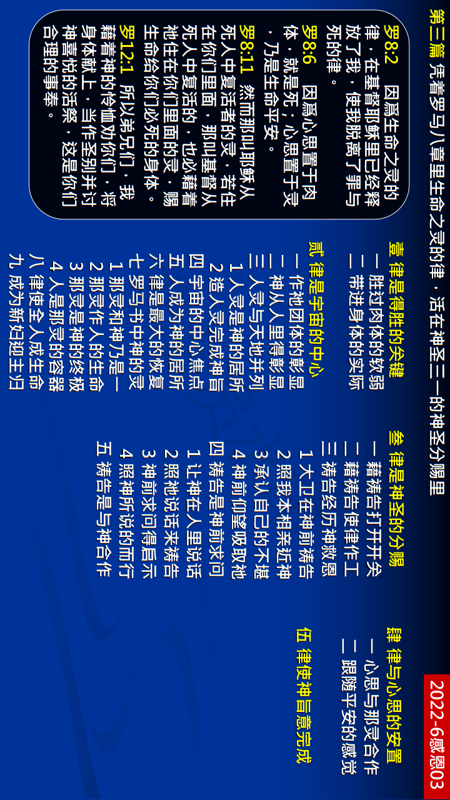

第三篇 凭着罗马八章里生命之灵的律，活在神圣三一的神圣分赐里
前言
关于神圣三一的神圣分赐，我们不仅有『万 能的钥匙』─神永远的经纶─打开圣经的启 示；我们也有『绝佳的道路』─神圣的罗曼史 ─经历圣经的启示；我们更有本篇信息所描 绘之『装置的开关』─生命之灵的律─豫备基 督的新妇。
真理要点(鸟瞰)
壹 作得胜者的关键：①罗马八章的啓示②罗马八章的经历
贰 全本圣经的焦点：①神的经纶的焦点②神创造人的心意③人灵与天地并列 ④宇宙的中心焦点⑤我们喜乐的因由⑥神经纶最大恢复 ⑦指向赐生命的灵⑧我们成为奏厄人⑨豫备基督的新妇
叁 活在神圣分赐里：①需要我们的合作②藉着祷告接触主③祷告乃是吸取神 ④祷告也是发表神⑤与律合作的操练
肆 我们生活的祕诀：①专注于我们的灵②受调和的灵管理
伍 享受分赐的目标：成为新耶路撒冷
经历应用(操练)
经过过程的三一神作为生命之灵的律，已经装置在我们 里面。然而，我们被脾气困扰时，可能还会禁食祷告， 呼求神怜悯我们，帮助我们不发脾气。这种祷告不会得 蒙垂听。我们需要领悟，三一神已经装置在我们里面， 祂作为一个律正在我们里面运行。既然我们的神是在我 们里面运行的律，我们就该简单照着我们的灵而行，藉 此『打开开关』。只要我们照着我们的灵而行，自然而然 就会胜过脾气。
负担
神圣三一作生命之灵的律，在我们这些信祂之人里面分 赐的结果，不仅拯救我们脱离且征服消极的事，并且积 极的供应我们灵、魂、体三部分的人，使我们被圣化、 更新、变化、模成。末了，我们全人要被神圣的荣耀浸 透，就是身体得赎。当基督再来的时候，我们要得着完 满的儿子名分，就是身体改变形状，和祂荣耀的身体相 像。这是神完全救恩的极致，也是生命之灵的律在我们 里面分赐的最高结果。
